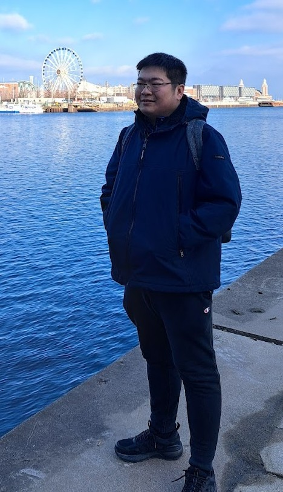

My name is Weiliang Huang. My home college is Harry S Truman. I majored in mathematics at the U of I in 2018, and I am currently working at a law firm. I loves read books and watch movies. I really enjoy history documentaries and cooking videos. Sometimes I would play some online games with my friends.
I chose it because I love European history. I want to visit this city to see its rich cultural heritage, vibrant city life, and unique geographical scenery.
